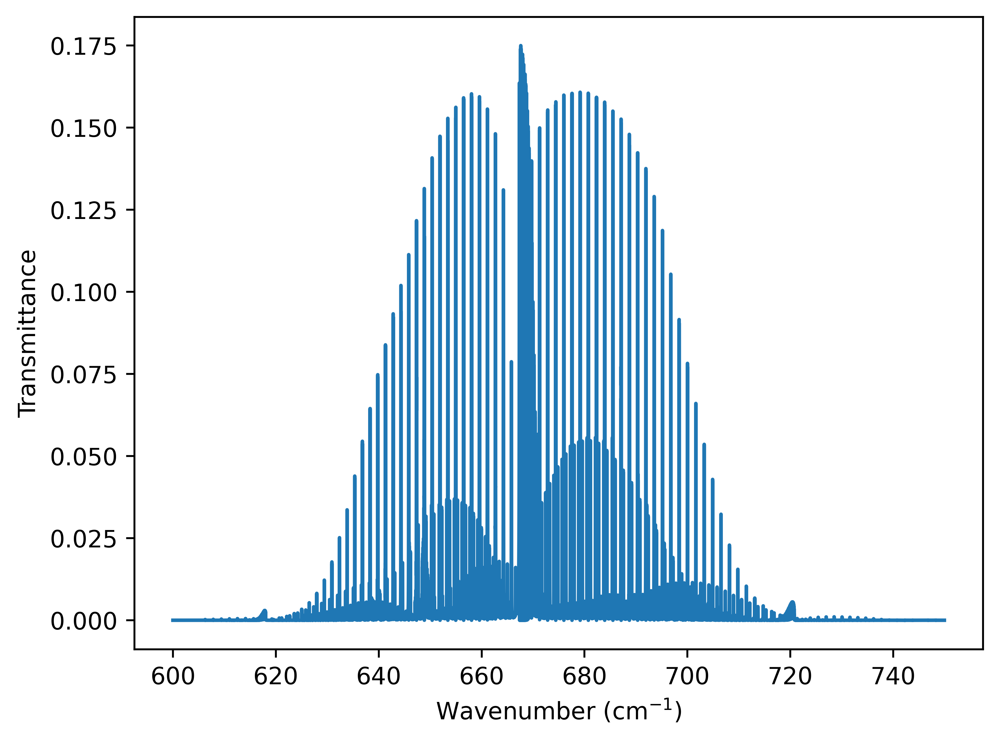
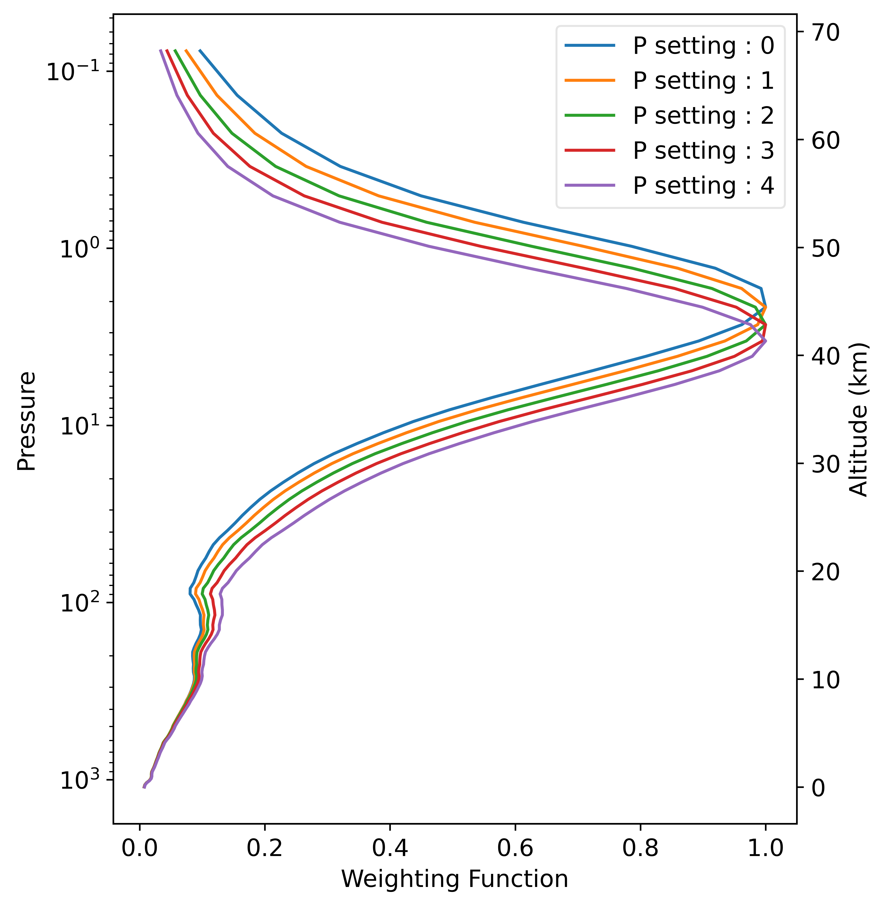

Updated radiative transfer modelling to simulate instruments from the 1970s
Valentin Jules, Jean-Marie Lalande, Jérôme Vidot
Objectives
- Simulate the radiometer using LBLRTM
- Modelize the instrument measurement with RTTOV
- ERA-6 re analysis
Pressure Modulator Radiometer
Nimbus 6 (1975-1978)
Measurements principles

Cell 1 : L = 6cm
Cell 2 : L = 1cm
Spectral Response Function

Spectral Response Function

Weighting Functions Nadir, profil83


Weighting Functions Nadir, profil83

Weighting Functions Nadir, profil83

Doppler Scanning
\begin{equation}
\nu = \nu_e \left( 1 + \dfrac{v \cos(\theta)}{c} \right)
\end{equation}
\begin{equation}
\nu = \nu_e \left( 1 + \dfrac{v \cos(\pi/2 - \alpha)}{c} \right)
\end{equation}
\begin{equation}
\nu = \nu_e \left( 1 \pm \dfrac{v \sin(\alpha)}{c} \right)
\end{equation}
Doppler Scanning

Doppler Scanning

Doppler Scanning

Doppler Scanning

Doppler Scanning

Doppler Scanning

Doppler Scanning

176 channels : 88 angles \(\times\) 2 cells
Peaks altitudes

RTTOV profils

RTTOV Simulated Brightness Temperature

Observed Brightness Temperature

Simulated Weighting Functions

Simulated Weighting Functions


Simulated Weighting Functions

Simulated Weighting Functions

Simulated Weighting Functions

Weighting Functions for different resolution

Stratospheric Sounding Unit
TIROS-N (1979) … NOAA-6 … NOAA-14 (2006)
Measurements principles
3 cells
8 satellites
Spectral Response Function

Weighting Functions, profil83
Weighting Functions, profil83

Selective Chopper Radiometer
Nimbus 4 & 5 (1970-1974)
Channels

Measurements principles

4 cells
Difference after the cells
Cell transmittance

Weighting Function

Spectral Response Function

Weighting Functions

Weighting Functions

Weighting Functions

Weighting Functions

Weighting Functions

SRF
\begin{equation}
SRF = T_1 - T_2
\end{equation}
\begin{equation}
R_{1-2} = \dfrac{R_1 - f R_2}{1 - f}
\end{equation}
Conclusion
- We can use LBLRTM to simulate CO2 cells
- SCR, PMR & SSU instruments probe in the upper stratosphere
- Doppler scanning must be taken into account for PMR
Further investigations
- Extend profiles dataset
- Adjust resolution of profiles set
- Generate coefficients for SCR & SSU